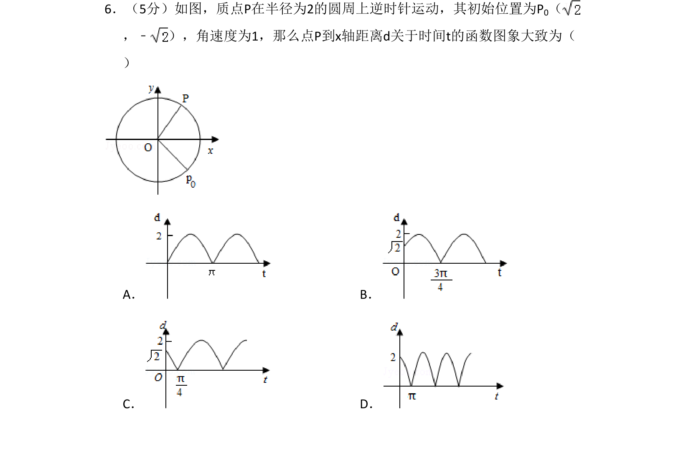
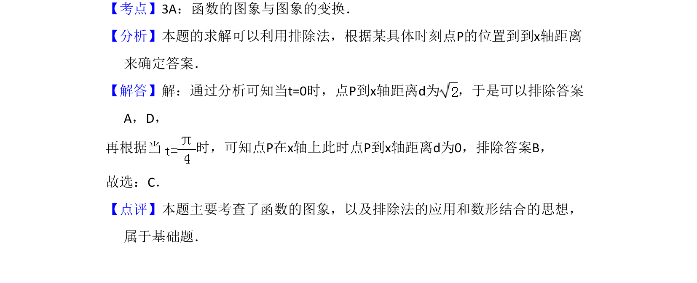

考点：函数的图象与图象变换 排除法 数形结合

质点P在圆周上逆时针运动，求其到x轴距离d关于时间t的函数图象。

📄 原 PDF 第 4 页：
素材/真题/吉林/2008-2024·（吉林）数学高考真题/2010年高考数学试卷（文）（新课标）（解析卷）.pdf
6．（5分）如图，质点P在半径为2的圆周上逆时针运动，其初始位置为P0（ ，﹣ ），角速度为1，那么点P到x轴距离d关于时间t的函数图象大致为（ ） A．B． C．D．
【考点】3A：函数的图象与图象的变换．菁优网版权所有 【分析】本题的求解可以利用排除法，根据某具体时刻点P的位置到到x轴距离 来确定答案． 【解答】解：通过分析可知当t=0时，点P到x轴距离d为 ，于是可以排除答案 A，D， 再根据当 时，可知点P在x轴上此时点P到x轴距离d为0，排除答案B， 故选：C． 【点评】本题主要考查了函数的图象，以及排除法的应用和数形结合的思想， 属于基础题．